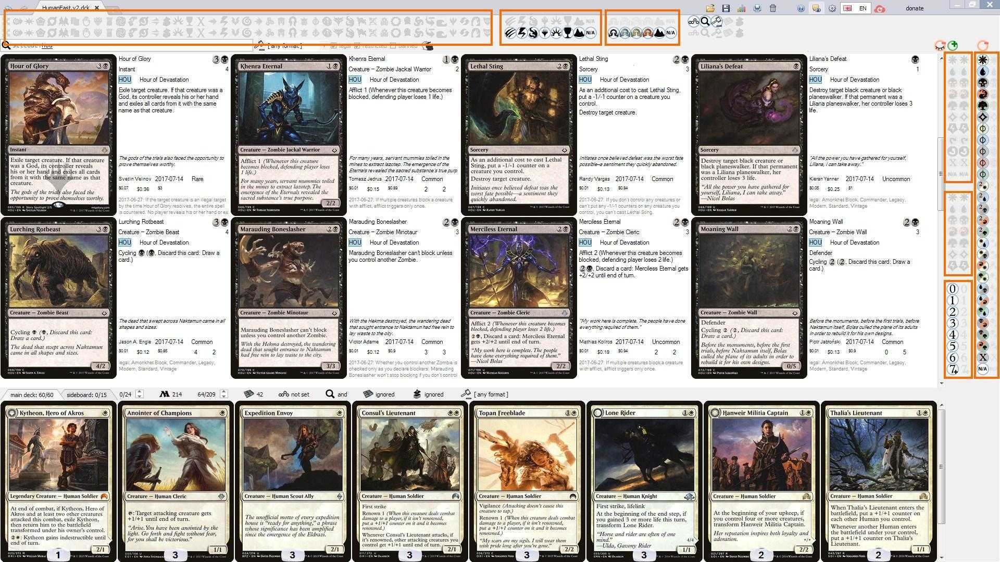
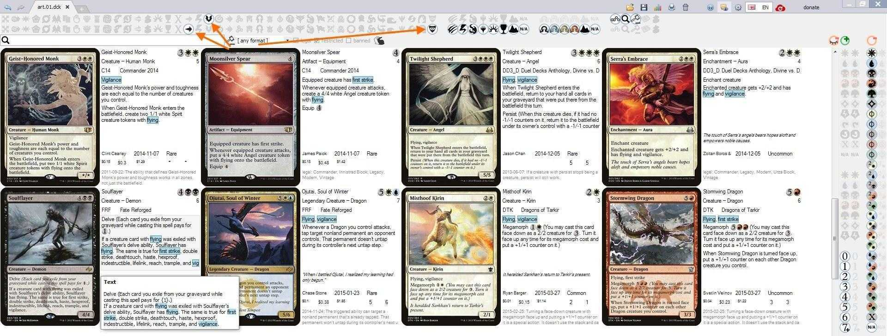
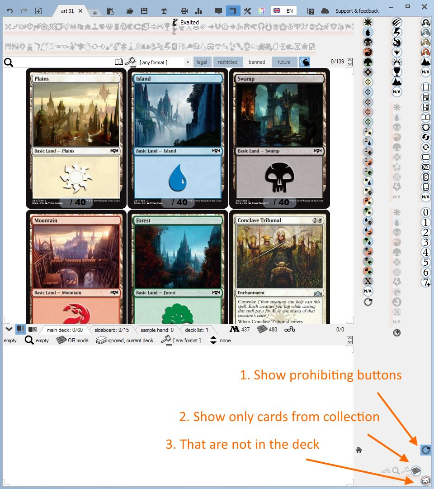

Filter buttons
Filter buttons in top- and right- most window panels
{kind=link}
The 7 button groups differ by the card property they correspond to. These buttons filter cards by
- card abilities (text)
- type
- rarity
- mana symbol in card abilities (text)
- generated mana
- converted mana cost
- mana cost
Checking the button in top row (right column for vertical panel) applies filter with operator AND.
Checking the button in bottom row (left column for vertical groups) applies filter with operator OR.
Filters by different properties are always joined through AND.
{kind=link}
Simplified checking / unchecking
When Left clicking a value in some Button filters Mtgdb.Gui applies complicated
usability logic. For example when left clicking {R} in filter by ManaCost
you also get checked phyrexian red {R/P} and mixed variants {R/2}, {R/W}
and so on.
Use Right click to simply check / uncheck a value without affecting other values.
Resetting
To reset filter buttons group to it's default state click it using middle mouse button.
Combining buttons with other filters

Using Filter buttons and other User Interface elements you can set the following types of filters:
- Filter buttons
- Search text
- Legality filter
- Filter to cards present in your collection
- Filter to cards present in your deck
To select between AND / OR operators for those types use the the rightmost buttons group in top panel.
Just like with filter buttons checking in the top row corresponds to AND, in the bottom to OR.
If neither top or bottom is checked, the filter type is ignored when filtering cards.
Filter by negative condition
Suppose you are adding cards to your deck. You enable filter by collection to hide cards you don't own. Now how do you also hide the cards already added to the deck?
{kind=link}